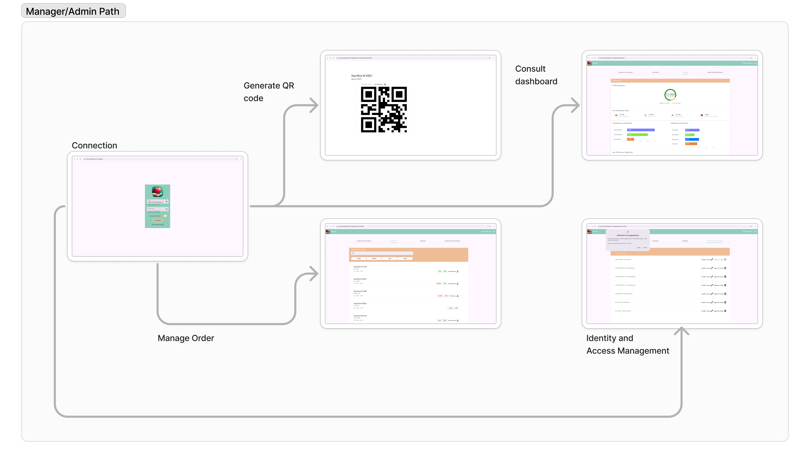
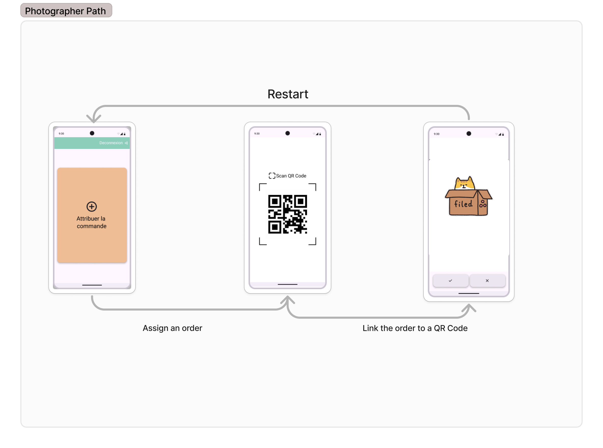

hassanates.fr App & Web
Job: Product Designer | Volunteer for Malik Ibn Anas Association
Saas pour le suivi des dons de moutons en temps réel pour l’Afrique Centrale et application pour enregistrer les dons.
Contexte & Enjeux
L’association Hassanates.fr recevait de nombreux dons sans moyen fiable de suivi ni transparence sur leur utilisation. Les donateurs ne savaient pas si leur contribution atteignait bien les bénéficiaires, ce qui freinait la confiance et les futurs dons.
Le défi : créer un système léger, simple et fonctionnel hors ligne, utilisable par des bénévoles dans des zones à faible connectivité.
Conception d’un écosystème en deux volets :
- 📱 Application mobile pour les bénévoles : prise de photo, géolocalisation et envoi automatique de mail de suivi au donateur.
- 💻 Interface web pour les coordinateurs : tableau de bord en temps réel, suivi par zone et génération automatique des QR Codes de suivi.
Mon rôle
J’ai conduit l’ensemble de la démarche UX, depuis le recueil des besoins en France et en Afrique jusqu’à la conception du produit final. Mon objectif : rendre visible l’invisible — la chaîne de confiance entre le donateur, le terrain et le bénéficiaire.
- Entretiens avec bénévoles et donateurs (France / Cameroun)
- Analyse des usages terrain et contraintes logistiques
- Wireframes et prototypes haute fidélité (Figma)
- Tests utilisateurs dans des conditions réelles
Statut du projet
- 🌍 Projet sera déployé en Afrique Centrale
- 📦 Premiers dons suivis en temps réel dès 2026
- 📣 Retour utilisateurs prévu 2026
- ✅ Premiers retours terrains montrent un taux de traitement qui double
Idéation & Prototypage
J’ai conçu des wireframes et un prototype haute fidélité sur Figma.
Chaque écran a été pensé pour simplifier la tâche des bénévoles, sur place et à distance.
📱 Version mobile (Photographer) 💻 Version desktop (Manager)Design final


À propos du projet & de mon rôle
En tant que Principal Product Designer, j’ai travaillé sur ce projet d’octobre à janvier 2025. Cette application, développée pour une organisation à but non lucratif, vise à fluidifier la gestion et le suivi des commandes. Elle se compose d’une application mobile et d’une application web, chacune adaptée à des rôles utilisateurs bien distincts.
L’application mobile est conçue pour les Photographes chargés de terrain, tandis que l’application web s’adresse aux Managers. Le projet comportait plusieurs défis : un temps de développement limité et la prise en charge de rôles multiples avec des besoins spécifiques.
Le développement est encore en cours, avec un lancement prévu en juin 2025. Une fois déployé, le système améliorera l'efficacité et la transparence dans la gestion des commandes pour l'association et ses bénéficiaires.
Problème
La gestion des commandes repose souvent sur des processus manuels, sources d’erreurs et de pertes de temps. L’objectif était donc de digitaliser et centraliser l’ensemble, pour offrir une expérience fluide aux Photographes et Managers. Cela permet une meilleure précision, un gain de temps et une visibilité accrue pour tous les acteurs.
Mise à jour (janv. 2025) : Une modification a été faite suite à des évolutions terrain. Il n’y a désormais que deux rôles : Photographe et Manager. Le processus de gestion a été repensé. Pour garder une cohérence avec notre parrainage, la partie utilisateur final a été supprimée. Ils recevront désormais un email de suivi jusqu’à la finalisation de la commande.
Contraintes & Défis
Ce projet bénévole a été réalisé avec peu de ressources et un temps limité. Les principaux défis :
- Rôles multiples : Conception d’interfaces pour trois rôles aux besoins et workflows différents.
- Scalabilité : Assurer la gestion simultanée de nombreuses commandes par des utilisateurs finaux.
- Optimisation des ressources : Trouver le bon équilibre entre richesse fonctionnelle et contraintes de temps/bénévolat.
Recherche Utilisateur
Pour concevoir une expérience pertinente, nous avons mené des entretiens avec des utilisateurs de chaque rôle (Managers et Photographes) et analysé les processus manuels existants.
Notre approche de recherche
Méthodologie structurée en trois temps :
- ✅ Entretiens : 2 Managers et 3 Photographes interrogés sur leurs usages et leurs besoins.
- ✅ Analyse des workflows : Observation des processus actuels pour repérer les irritants et leviers d’optimisation.
- ✅ Itérations & Feedback : Création de prototypes successifs, affinés avec les retours utilisateurs.
Ce que nous avons appris
- ✅ Photographes : Besoin d’un outil rapide pour scanner, téléverser des photos et valider les commandes.
- ✅ Managers : Besoin d’un tableau de bord centralisé pour gérer utilisateurs, QR codes, et suivi des performances.
- ✅ Utilisateurs finaux : Attente d’un suivi clair et temps réel de leurs commandes.
Personas
Parcours utilisateur
Hassan – Manager
Étape : Vérification des commandes
- Émotions : 😊 Confiant, 😌 Rassuré
- Points de friction : Aucun, le dashboard est simple à consulter et fiable.
- Opportunités : ✅ Ajouter des filtres interactifs pour naviguer dans les données.
Étape : Téléchargement d’un QR code
- Émotions : 😎 Concentré, 😊 Satisfait
- Points de friction : Coupures de courant possibles (ex : Mauritanie).
- Opportunités : ✅ Ajouter une file d’attente et sauvegarde automatique après chaque téléchargement.
Étape : Validation de la commande
- Émotions : 😊 Fier, 😌 Soulagé
- Points de friction : Peur de valider une mauvaise commande.
- Opportunités : ✅ Intégrer un message de confirmation pour éviter les erreurs.
Khalid – Photographe
Étape : Scan du QR code
- Émotions : 😊 Concentré, 😌 Motivé
- Points de friction : QR code mal imprimé ou abîmé difficile à scanner.
- Opportunités : ✅ Prévoir une saisie manuelle de secours.
Étape : Préparation de la commande
- Émotions : 😎 Efficace, 😊 Productif
- Points de friction : Difficile de suivre plusieurs articles à la fois.
- Opportunités : ✅ Ajouter une checklist intégrée à l’appli pour suivre l’avancement.
Étape : Mise à jour du statut
- Émotions : 😊 Accompli, 😌 Rassuré
- Points de friction : Incertitude que la mise à jour soit bien prise en compte.
- Opportunités : ✅ Confirmation visuelle + synchronisation temps réel.
Processus de conception
Parcours Manager
Ce schéma montre le parcours complet du Manager avec les fonctionnalités associées.
Parcours Photographe
Ce schéma montre le parcours complet du Photographe avec ses fonctionnalités dédiées.
Solution & Fonctionnalités
L’application mobile est dédiée au Photographe, l’interface web au Manager. Chaque rôle dispose de ses fonctionnalités :
- ✅ Attribution : Scanner un QR code, téléverser les photos de commande et valider les missions.
- ✅ Préparation : Mettre à jour le statut des commandes via QR code.
- ✅ Dashboard central : Suivi de toutes les commandes, génération des QR codes, gestion des utilisateurs.
Une solution pensée pour l’efficacité, la transparence et l’évolutivité.
Idéation & Prototypage
J’ai conçu les wireframes et les maquettes interactives sur Figma.
Chaque écran a été réfléchi pour simplifier la vie des photographes et des managers.
Voir le prototype Figma – Manager Voir le prototype Figma – PhotographeMockups & UI
Résultats & Retours
Le projet, encore en cours, a déjà montré son efficacité lors des premiers tests :
Méthodologie de test
Tests réalisés en conditions réelles avec chaque profil :
- ✅ Photographe : Test de scan et mise à jour de statut sur mobile.
- ✅ Manager : Test du dashboard web pour la gestion et la clarté des infos.
Retours utilisateurs
Les photographes ont apprécié la simplicité d’usage, les managers ont salué la centralisation des fonctions clés.
Défis rencontrés
- ✅ Onboarding : Simplifier l’accès pour les profils non techniques.
- ✅ Scalabilité : Prévoir une montée en charge avec plusieurs utilisateurs connectés.
Impact
- ✅ Gain de temps sur l’affectation et la préparation des commandes.
- ✅ Plus de transparence dans le suivi, même pour les utilisateurs finaux.
- ✅ Gestion facilitée pour les managers.
Outils utilisés
- ✅ MakeMyPersona (Hubspot) pour la création des personas.
- ✅ Photoshop pour les maquettes et visuels.
- ✅ Figma pour les prototypes interactifs.
- ✅ Trello pour la gestion agile.
- ✅ Outils Microsoft (Forms, Teams, Whiteboard) pour les tests et réflexions.